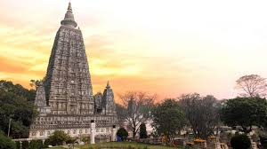
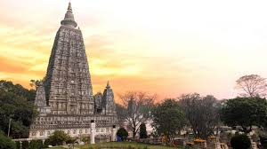

Mahabodhi Temple
 

Location: Bodh Gaya, Bihar
Significance: Site where Gautama Buddha attained enlightenment under the Bodhi tree
Deity: Not a deity-based temple; it is a Buddhist pilgrimage site
Vishnupad Temple
Location: Gaya, Bihar
Deity: Lord Vishnu
Significance: Temple enshrines Vishnu's footprint